¡Hola! Mi nombre es Jose Rocha. Tengo 27 años y les voy a hablar un poco sobre mí, soy estudiante de Arq. int. en la escuela de TOULOUSE LOUTREC estoy cruzando ya el último año de la carrera, soy doglover tengo 2 mascotas una llamada CLOE y la otra TEKILA, me apasionan los deportes de aventura al igual que conocer el mundo y sus culturas diversas, una de las cosas que me apasiona son los tatuajes tengo 7 tatuajes y cada uno tiene un significado importante en mi vida, en el área laboral vengo trabajando en una empresa de seguridad EMPSER SAC en el área de contabilidad, tengo el cargo de analista de tareajes. Estoy emocionado porque sepan un poco de mi vida.!
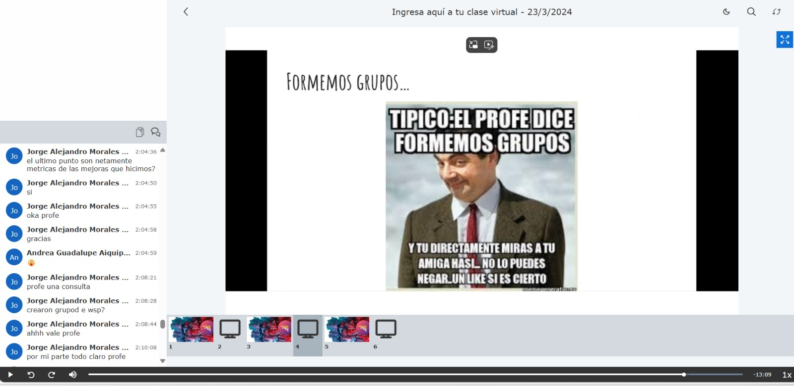
En esta semana, fue nuestro regreso a clase y poder conocer al profesor George y también a nuestros compañeros , tenemos dos días de clases martes presencial y sábado de manera virtual.
El martes nos explicaron un poco del curso dándonos una introducción de ello y la manera de enseñanza y calificación del profe.
El sábado realizamos grupos de 5 y formamos un whatsapp para poder comunicarnos y avanzar con el proyecto.
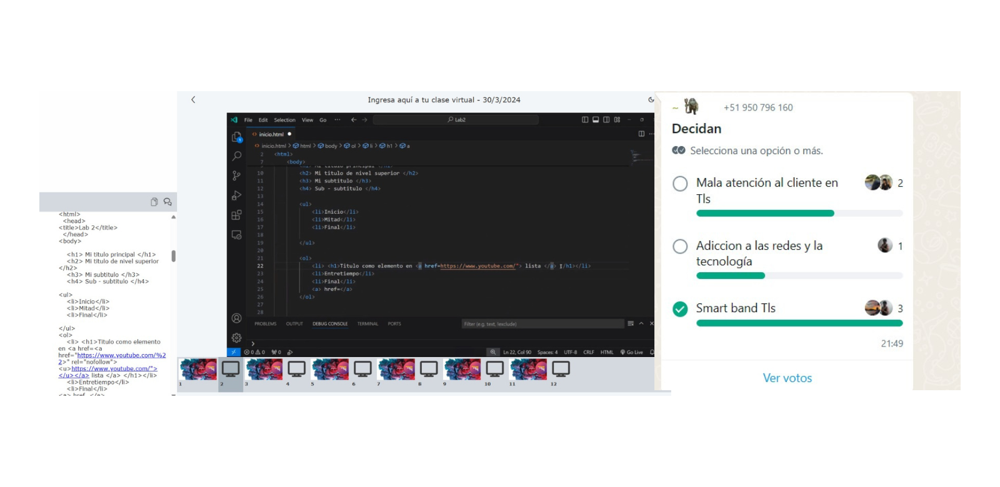
En esta semana, nos tocó aprender sobre los HTML5, y realizar una programación para la creación e incio de toda página web, para este tipo de diseños utilizamos también el CSS.
Le brindamos al profesor las opciones que teníamos sobre nuestro proyecto el cual el profesor nos mandó a buscar información sobre SMART BAND TLS ya que es una problemática que podíamos darle solución.
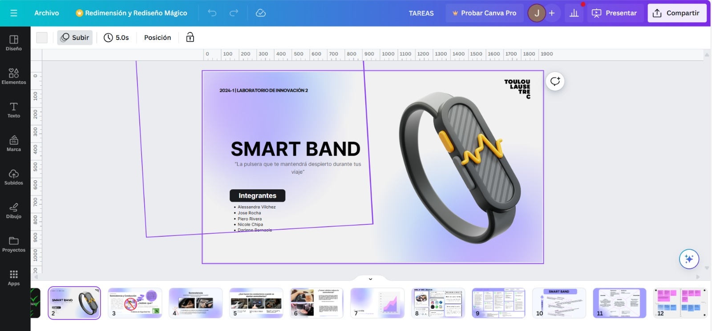
En esta semana, realizamos feedback sobre nuestro proyecto, el cual mostramos al profesor la investigación, encuestas que realizamos sobre la problemática y poder implementar con la ODS, todo lo encontrado lo colocamos en un canva.
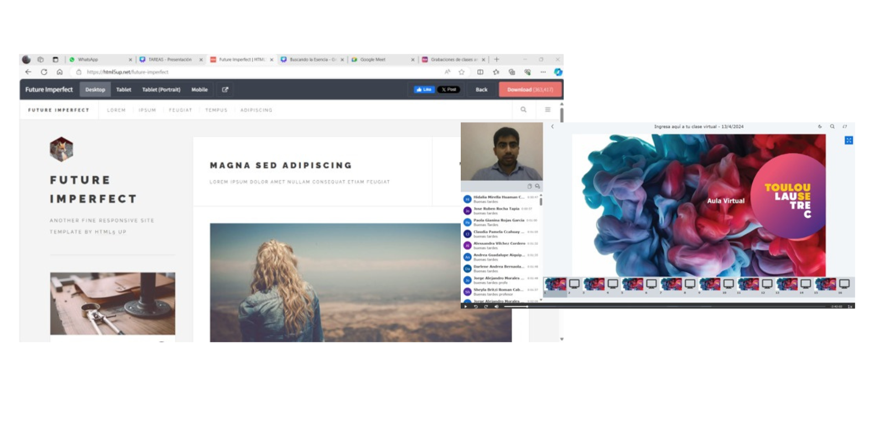
En esta semana, el profesor complemento más información sobre cómo realizar una página web, escogimos una plantilla para nuestra bitácora digital, yo escogí (Future-Imperfect / html5up) el cual también nos enseñó la implementación de imágenes, textos y poder modificar colores de la misma plantilla.
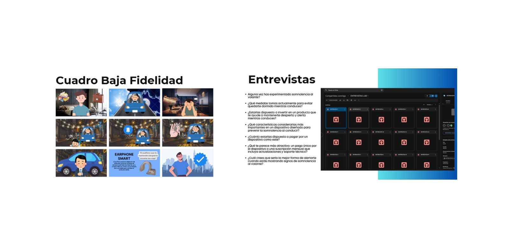
En esta semana, continuamos con el proceso del proyecto SMART BAND el cual realizamos prototipo de baja fidelidad que como grupo decidimos hacer un storytelling en donde reflejamos el impacto que tomaría en la vida real el proyecto después de ello realizamos una pequeña entrevista a unas 20 personas para poder obtener algún feedback y poder mejorar el proyecto.
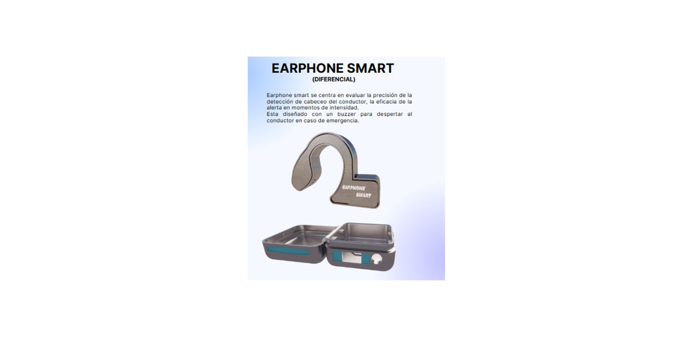
En esta semana, dimos un cambio radical sobre nuestro prototipo, ya que con el feedback que realizamos sobre las entrevistas decidimos hacer un cambio de prototipo en vez que sea un SMART BAND ahora le estamos dando un nuevo cambio como el EARPHONE SMART teniendo mejor comodidad al usar, nos enfocamos también en la electrónica y la programación al hacer que detecto el sensor de movimiento.
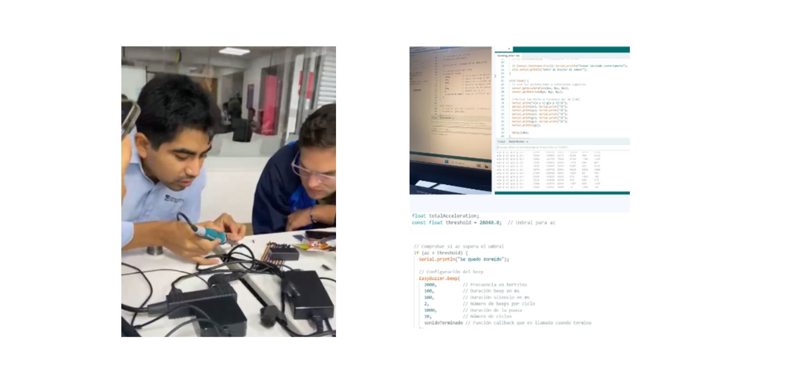
En esta semana, nos metimos de lleno en la conexión con el Arduino, con la ayuda del profesor entendimos la conexión de distintos componentes de manera precisa y segura.
Realizamos soldadura de la placa de conexión para que podamos armar y desarrollar el proyecto también presentamos todos los componentes que se iba a utilizar en el proyecto.
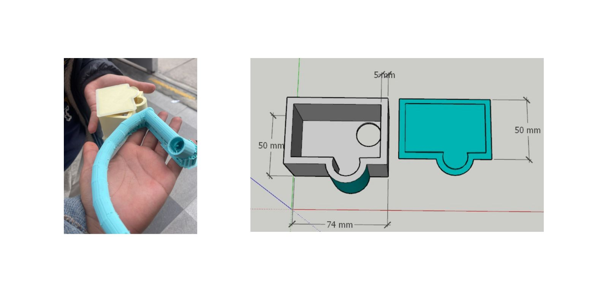
En esta semana, nos fuimos al mundo del 3D, realizamos un diseño en un software de diseño para poder ocultar los cables y conexiones como el sensor, buzzer, cables y Arduino, por medio del programa sketchup ya con medidas reales y lo pasamos en formato STL para que se pueda detectar el archivo la impresora de tls.
Nos percatamos al momento de la primera impresión que tuvimos algunos errores de medidas y nos salió la parte de la oreja (el audifino) muy grande, procedimos a realizar algunas modificaciones.
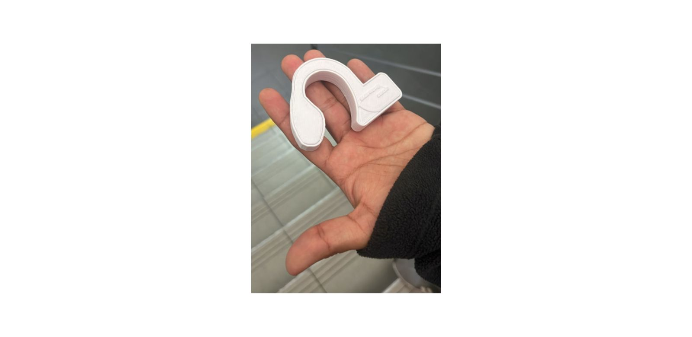
En esta semana, avanzamos con las modificaciones del audífono, llevando a cabo otro prototipo el cual tomamos en cuenta las mediciones más detalladas para lograr un confort óptimo y refinando el diseño para obtener una apariencia más elegante y sofisticada.
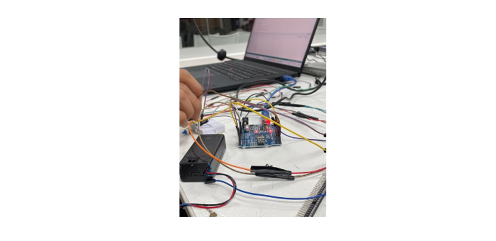
En esta semana, también continuamos con el proceso del circuito el cual le dimos un mejor enfoque al censor de movimiento ya que no obteníamos la lectura que solicitábamos y necesitamos para el buen funcionamiento del proyecto elegido, también pudimos realizar la conexión de todos los componentes y visualizar mejor el circuito y espacio que utilizaremos.
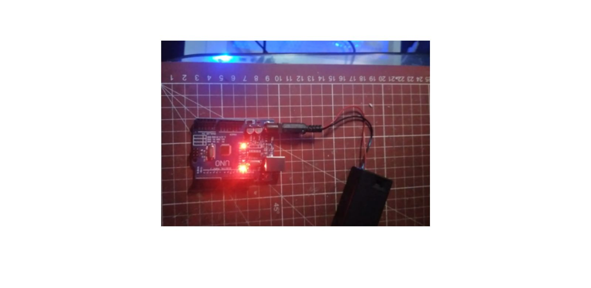
En esta semana, nos enfrentamos a un contratiempo significativo ya que manipulábamos el circuito; al desconectar y reconectar los cables, notamos que el soporte de la batería sufrió daños, provocando la desconexión de un cable crucial que impide la alimentación eléctrica del Arduino, impidiendo que no funcione el circuito.
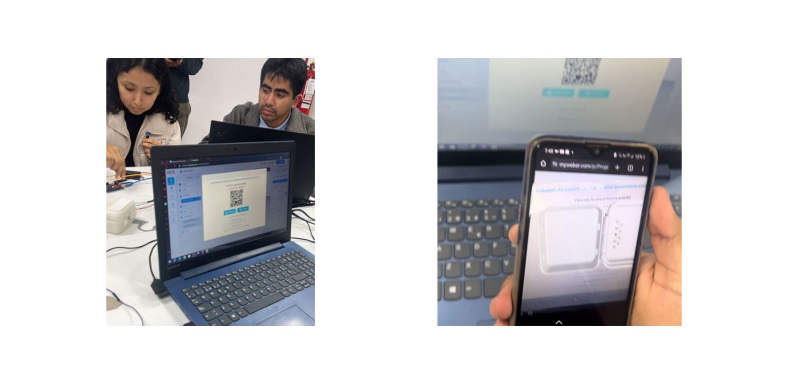
En esta semana, continuamos explorando las vanguardias tecnológicas, como la realidad virtual y la realidad aumentada. Hemos investigado diversas plataformas que nos permiten implementar estos efectos, utilizando específicamente una herramienta que emplea un QR para superponer diseños en realidad virtual.
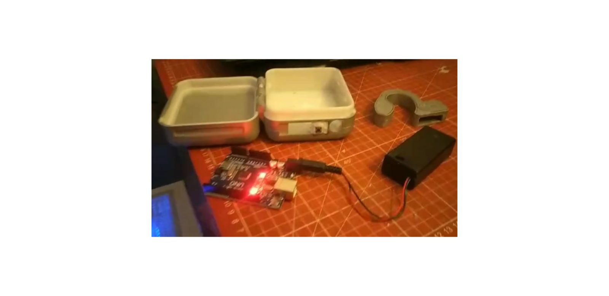
En esta semana, seguimos modificando el 3D yap que al circuito le estamos agregando un botón el cual no teníamos previsto desde un inicio, pero al volver hacer nuestras encuestas y validaciones, nos percatamos de ese detalle el cual decidimos incluirlo en el circuito y en el prototipo de la caja .
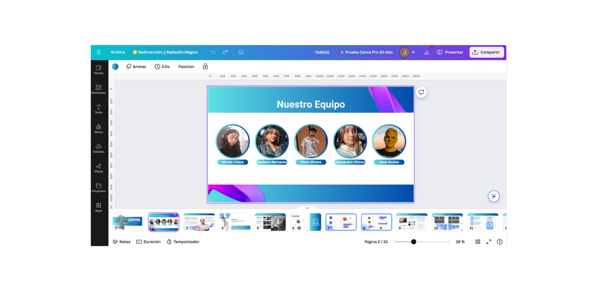
Durante esta semana, hemos dedicado nuestros esfuerzos a la preparación meticulosa y la composición detallada de nuestra presentación, con el objetivo de realizar un sustento ante el jurado. Hemos asegurado la inclusión exhaustiva de todos los puntos requeridos según la rúbrica establecida.
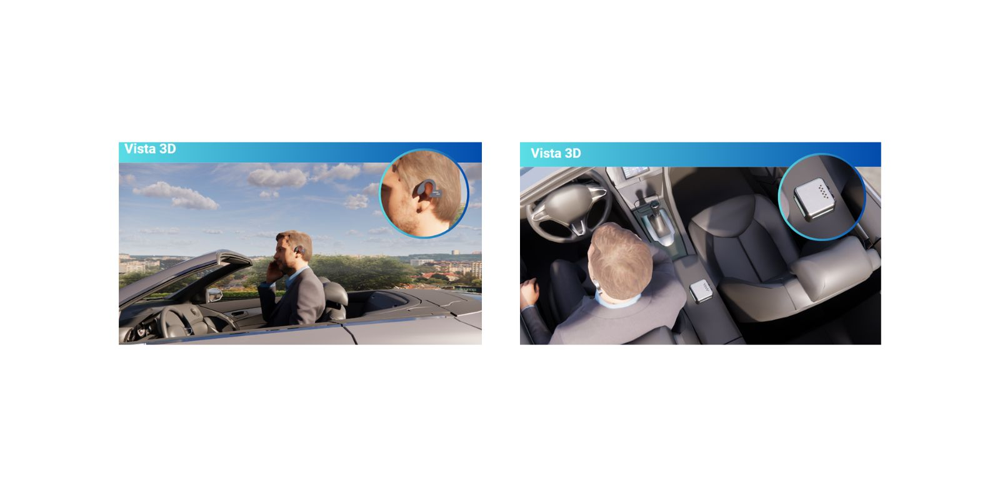
Durante esta última semana, completaremos la entrega final de este proyecto, permitiéndonos evidenciar de manera concreta todo el esfuerzo invertido y observar su efectiva implementación en el contexto real. Esperamos así contribuir significativamente a resolver una problemática cotidiana, promoviendo un entorno más seguro y reduciendo incidentes automovilísticos.